library(tidyverse)3 Data Visualisation
In this chapter, we will cover the basics of data visualisation using the ggplot2 package in R. ggplot2 uses a conceptual framework called Grammar of Graphics , which allows you to compose graphs by combining independent components. Every graph produced with ggplot2 can be built from the same components: data, a coordinate system and geoms (visual marks representing data points). That is what makes ggplot2 so powerful. We will now explore how to create various types of plots, customize them, and save them for publications or presentations.
So let’s start. ggplot2 is a part of tidyverse, so you should have it installed already, and you can load it by running:
This is a line that should appear at the beginning of each of your new scripts.
To make a plot, we first need some data. We will use a dataset of size measurements for three penguin species observed on three islands in the Palmer Achipelago (Antarctica).

To get the data, we need to load another package (if you get an error message that there is no such package, install it first):
library(palmerpenguins)By loading the package, we got access to a penguin dataset, that we might now call as an object called penguins. Before plotting, we can briefly look at the data structure:
glimpse(penguins)Rows: 344
Columns: 8
$ species <fct> Adelie, Adelie, Adelie, Adelie, Adelie, Adelie, Adel…
$ island <fct> Torgersen, Torgersen, Torgersen, Torgersen, Torgerse…
$ bill_length_mm <dbl> 39.1, 39.5, 40.3, NA, 36.7, 39.3, 38.9, 39.2, 34.1, …
$ bill_depth_mm <dbl> 18.7, 17.4, 18.0, NA, 19.3, 20.6, 17.8, 19.6, 18.1, …
$ flipper_length_mm <int> 181, 186, 195, NA, 193, 190, 181, 195, 193, 190, 186…
$ body_mass_g <int> 3750, 3800, 3250, NA, 3450, 3650, 3625, 4675, 3475, …
$ sex <fct> male, female, female, NA, female, male, female, male…
$ year <int> 2007, 2007, 2007, 2007, 2007, 2007, 2007, 2007, 2007…The dataset contains information about 344 penguins, and there are 8 different variables. You can read more about them in the documentation by running ?penguins.
3.1 Getting started: scatterplot
We will now visualise the relationship between the different dimensions of the penguin bill:

Visualisation with ggplot2 starts with the function ggplot(). This will define a plot object, where you can then add layers. The first argument to this function is data, which specifies which data to use for plotting. Running the following will create an empty plot, an empty canvas prepared for plotting desired layers onto.
ggplot(data = penguins)
Next, we have to tell ggplot() how the data should be visualised. For this, we specify the mapping argument, which is always defined by the aes() function (aesthetics). The x and y arguments of the aes() function specify, which variables to map to the x and y axes of the plot.
ggplot(data = penguins,
mapping = aes(x = bill_length_mm, y = bill_depth_mm))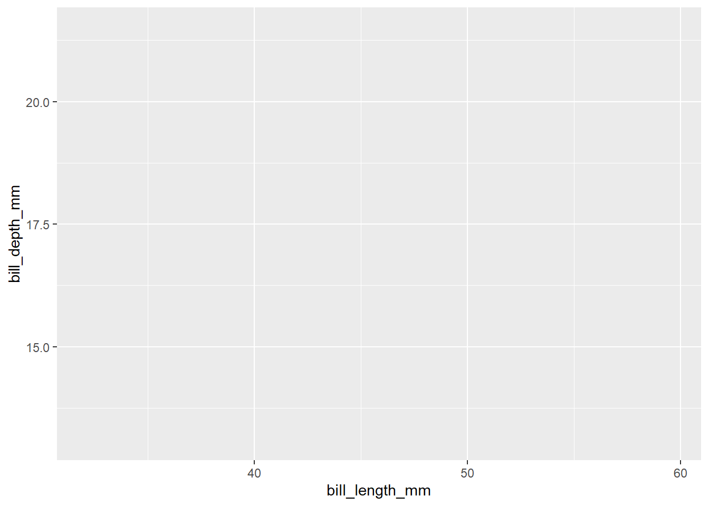
The ggplot() now knows which variables will be displayed on each axes and added the axis names and value ranges to our empty plot. However, we still didn’t provide any information about how the data point should be displayed. To do so, we define a geom, geometrical object to represent the data. ggplot2 provides a wide variety of possible geometries, all defined by functions starting with geom_. Boxplots are drawn using boxplot geoms (geom_boxplot()), bar charts use bar geoms (geom_bar()), line charts use line geoms (geom_line()), scatterplots use point geoms (geom_point()), etc. We now aim to create a scatterplot, which means adding points to our plot using the geom_point() function:
ggplot(data = penguins,
mapping = aes(x = bill_length_mm, y = bill_depth_mm)) +
geom_point()Warning: Removed 2 rows containing missing values or values outside the scale range
(`geom_point()`).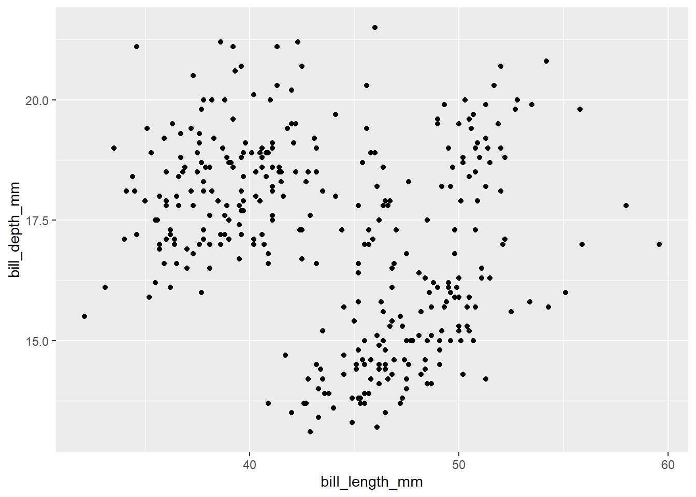
Now, the plot with a point for each row in the data appears. However, there is a warning message in the console, which tells us that 2 rows contained missing values or values outside of the scale range. We didn’t set any limit for x or y axis, so it most likely means there are some missing values in the data. We will not focus on this point now, but the ideal next step would be to check the data, where the missing values appeared and why. If possible, correct missing data in the original data, load new data and continue.
Note that we use + for adding layers to ggplot() instead of %>% or |>. This is because + in ggplot() existed earlier than the pipe was discovered. It might be confusing and a cause errors, but don’t worry, R will tell you what’s wrong if it happens:
ggplot(data = penguins,
mapping = aes(x = bill_length_mm, y = bill_depth_mm)) |>
geom_point()Error in `geom_point()`:
! `mapping` must be created by `aes()`.
✖ You've supplied a <ggplot2::ggplot> object.
ℹ Did you use `%>%` or `|>` instead of `+`?When we look at the scatterplot, there doesn’t appear to be a clear relationship between the penguin bill length and bill depth. Let’s add one more layer to our plot to check the relationship. To add a line based on linear regression, we use geom_smooth function with method = 'lm':
ggplot(data = penguins,
mapping = aes(x = bill_length_mm, y = bill_depth_mm)) +
geom_point() +
geom_smooth(method = 'lm')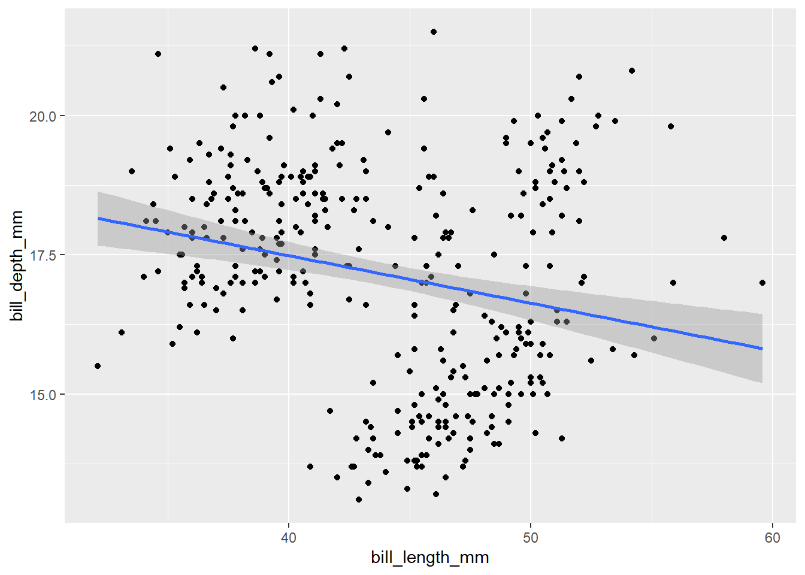
Now it seems there is a slightly negative relationship, which is a bit contrary to the expectations. Moreover, if we focus on the positions of the points in the scatterplot are a bit clustered. Let’s recall the structure of our data. We have measurements of three different species in the dataset. What if this is the cause? Let’s incorporate the species identity into our visualisation. We can do this by adding colour to the points. For this we need to modify the aesthetics:
ggplot(data = penguins,
mapping = aes(x = bill_length_mm, y = bill_depth_mm, colour = species)) +
geom_point() +
geom_smooth(method = 'lm')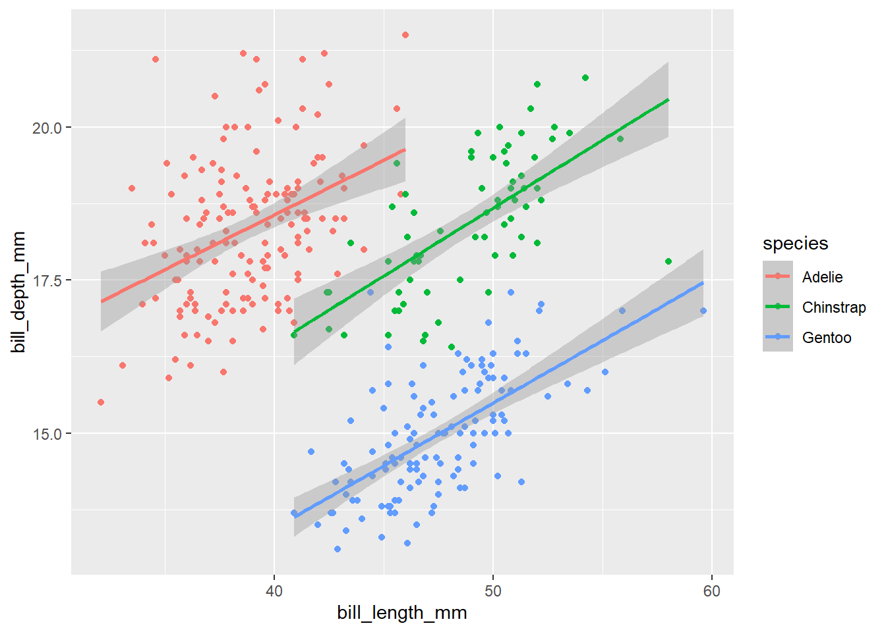
Now it is clear that species identity is really important and the relationship between the bill dimensions is in fact positive. This is a classical example of the Simpson’s paradox (a relationship appears in several groups of data, but disappears or reverses when the groups are combined). Look here for an explanation or here for a song :-).
In addition to the colour, we can also distinguish species in the plot by adding shape aesthetics.
ggplot(data = penguins,
mapping = aes(x = bill_length_mm, y = bill_depth_mm, colour = species, shape = species)) +
geom_point() +
geom_smooth(method = 'lm')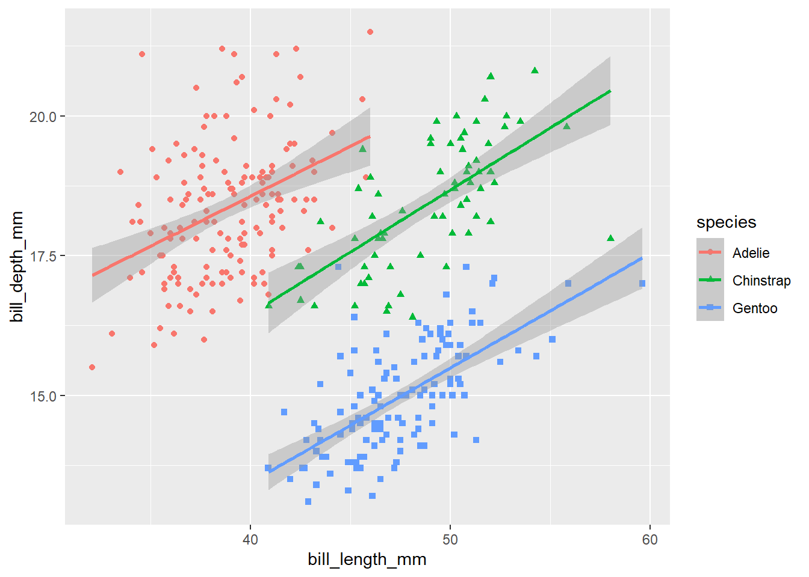
Note that the legend is automatically updated to reflect both the different colours and shapes of the points.
Let’s play a bit more with the different shapes and colours, the points could be better distinguished from each other if the points were black-delimited. This might be changed by the specification of scale for the shape aesthetics. Bounded shapes with coloured inside are 21-25 and we want to use the circle, square and triangle:
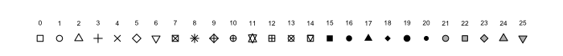
ggplot(data = penguins,
mapping = aes(x = bill_length_mm, y = bill_depth_mm, colour = species, shape = species)) +
geom_point() +
geom_smooth(method = 'lm') +
scale_shape_manual(values = c(21, 22, 24))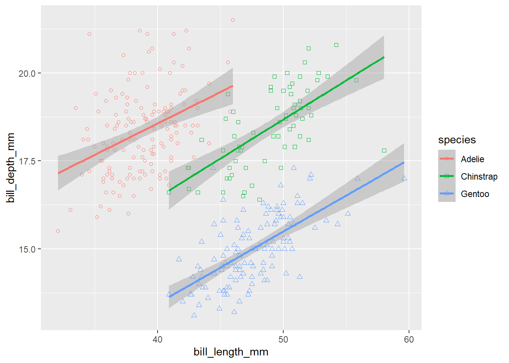
Oh, but this is not what we wanted, the shapes have only coloured boundaries, but no fill. Let’s make it correctly. The fill colour is specified by the fill aesthetics, so we have to add this one. Moreover, the colour aesthetics is now specified directly in the ggplot() function, which means it applies to all layers in the plot. But we want all points to have black borders, so the colour should apply only to the lines. We can do this by moving the colour aesthetics to the geom_smooth() layer.
ggplot(data = penguins,
mapping = aes(x = bill_length_mm, y = bill_depth_mm, fill = species, shape = species)) +
geom_point() +
geom_smooth(aes(colour = species), method = 'lm') +
scale_shape_manual(values = c(21, 22, 24))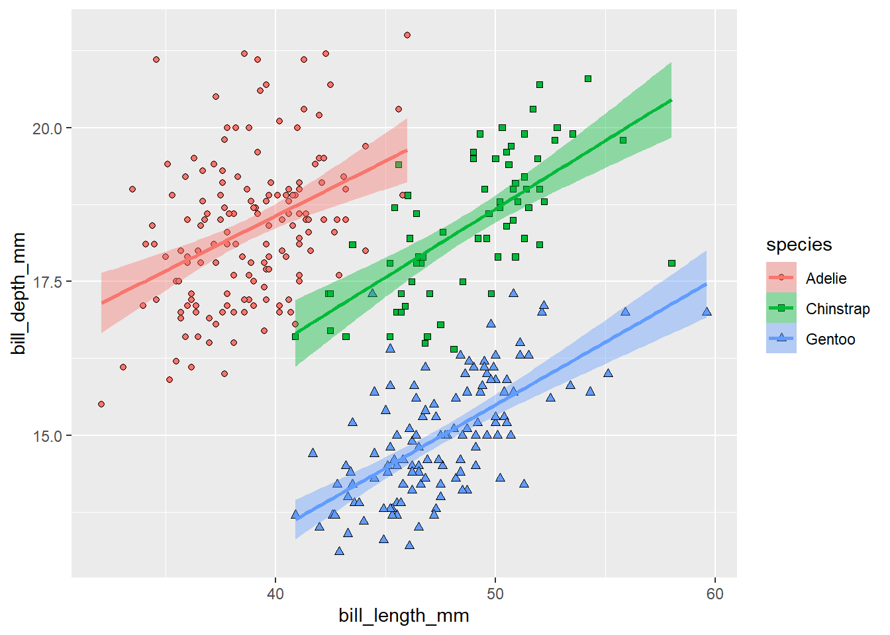
Much nicer! Note that adding the fill aesthetics to the ggplot() also changed the colour of the confidence intervals for the regression lines.
The legend is now showing all aesthetics differentiating the groups in the plot. Maybe we don’t need to display all of them. It would be enough to display a legend for the points, because the lines have the same colours. We can switch off legend for a given layer using show.legend = F:
ggplot(data = penguins,
mapping = aes(x = bill_length_mm, y = bill_depth_mm, fill = species, shape = species)) +
geom_point() +
geom_smooth(aes(colour = species), method = 'lm', show.legend = F) +
scale_shape_manual(values = c(21, 22, 24))To make the plot more publication-ready, we should pay more attention to the axes labels. We can change them using the labs() function. To rename the legend, we have to specify labels for all aesthetics used to distinguish the different categories.
ggplot(data = penguins,
mapping = aes(x = bill_length_mm, y = bill_depth_mm, fill = species, shape = species)) +
geom_point() +
geom_smooth(aes(colour = species), method = 'lm', show.legend = F) +
scale_shape_manual(values = c(21, 22, 24)) +
labs(x = 'Bill length (mm)', y = 'Bill depth (mm)', fill = 'Species', shape = 'Species')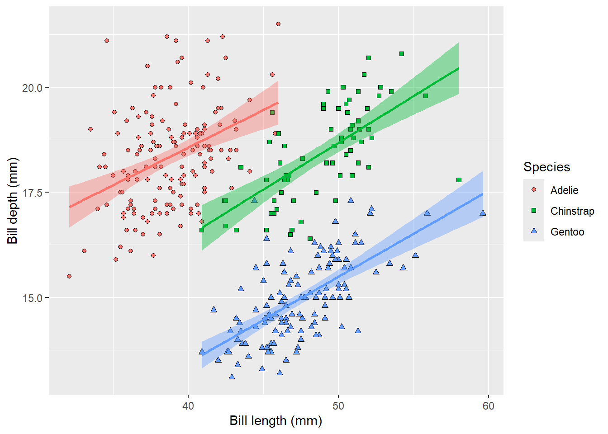
Almost publication-ready, except the grey background is not very nice. It might be easily remove by adding a different theme. One of our favourites is theme_bw(), meaning black and white, but you can experiment with different ones or even define your own.
ggplot(data = penguins,
mapping = aes(x = bill_length_mm, y = bill_depth_mm, fill = species, shape = species)) +
geom_point() +
geom_smooth(aes(colour = species), method = 'lm', show.legend = F) +
scale_shape_manual(values = c(21, 22, 24)) +
labs(x = 'Bill length (mm)', y = 'Bill depth (mm)', fill = 'Species', shape = 'Species') +
theme_bw()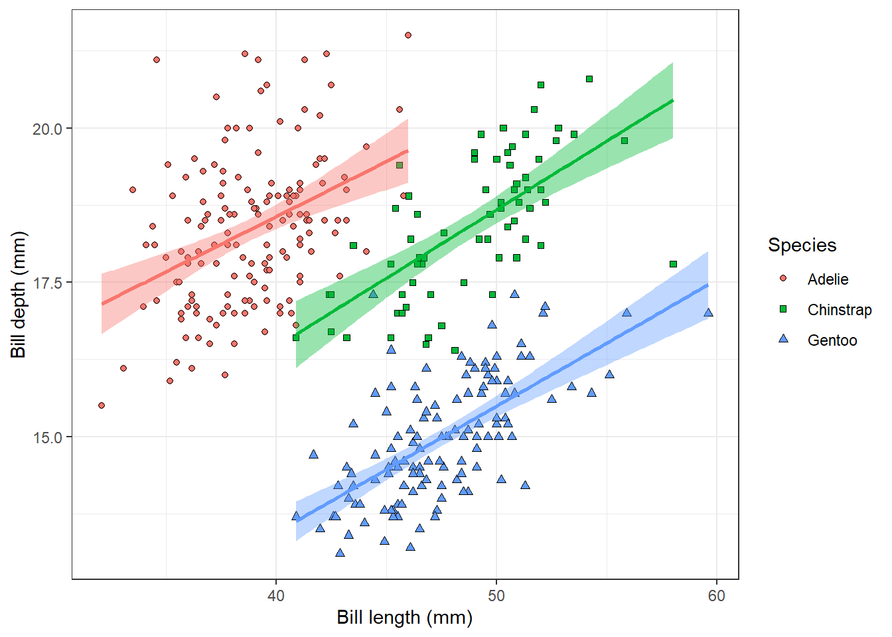
This is our final plot showing the relationship between penguin bill dimensions of three different species.
3.2 Histogram
Let’s explore the dataset more and take a look at different plot types. For example, we can look at the distribution of the penguin body mass using a histogram. We only specify x aesthetics here, because the histogram divides x-axis into equally spaced bins and then uses the height of the bar to display the number of observations that fall into each bin. The binwidth argument sets the width of the bins.
ggplot(penguins, aes(x = body_mass_g)) +
geom_histogram(binwidth = 200)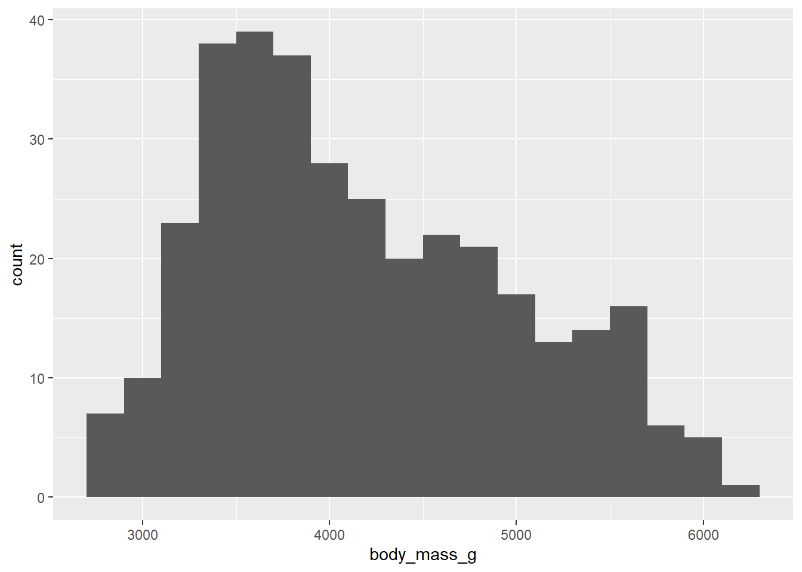
For now, we will not go into detail on how to improve the appearance of this plot, you can take it as an exercise and experiment with it on your own.
3.3 Boxplot
There is surely also a difference between different penguin species. We can visualise the differences using a boxplot:
ggplot(penguins, aes(x = species, y = body_mass_g)) +
geom_boxplot()
We can also colour the boxes using the fill aesthetics. To make this plot nicer, we will again change the theme of the plot. We can also change the label of the y axis, while the label of the x axis is a bit redundant and it would be better to remove it. This might be done within the theme() function. That’s where we can customise the properties of different plot components, such as axis labels, legend or background grid lines. To remove the given component, we set the argument to element_blank().
ggplot(penguins, aes(x = species, y = body_mass_g, fill = species)) +
geom_boxplot() +
labs(y = 'Body mass (g)', fill = 'Species') +
theme_bw() +
theme(axis.title.x = element_blank())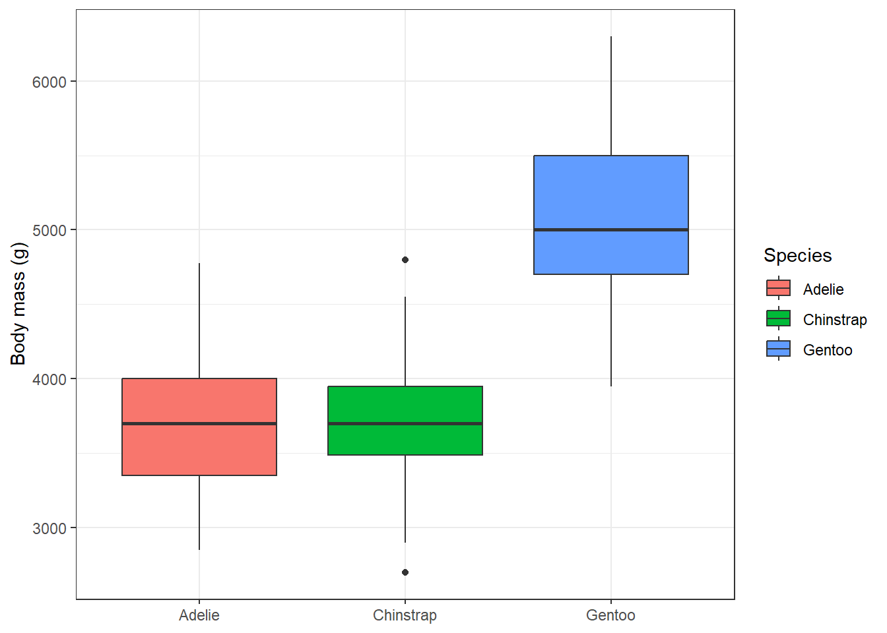
3.4 Bar chart
To examine the distribution of a categorical variable, we can use a bar chart. The penguin measurements come from three different islands, let’s see how the distribution of measurement across the islands looks like:
ggplot(penguins, aes(x = island)) +
geom_bar()
And were all three penguin species measured at each of the three islands? We can see that when we map species using the fill aesthetics. The colour would control the border colour of the bars. We can also set that all bars should have black borders by setting colour = 'black' in geom_bar. We can also directly modify the theme and plot labels.
ggplot(penguins, aes(x = island, fill = species)) +
geom_bar(colour = 'black') +
labs(x = 'Island', y = 'Number of individuals', fill = 'Species') +
theme_bw()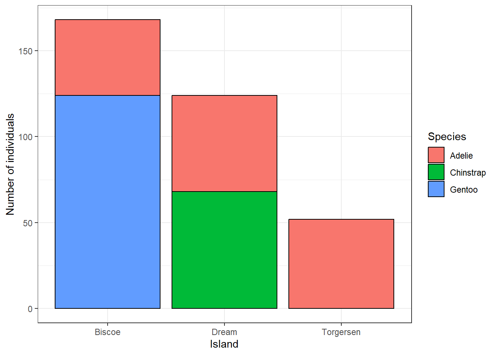
Instead of the number of individuals, we can also display the relative frequency of different species at the islands by setting position = 'fill'.
ggplot(penguins, aes(x = island, fill = species)) +
geom_bar(colour = 'black', position = 'fill') +
labs(x = 'Island', y = 'Relative frequency', fill = 'Species') +
theme_bw()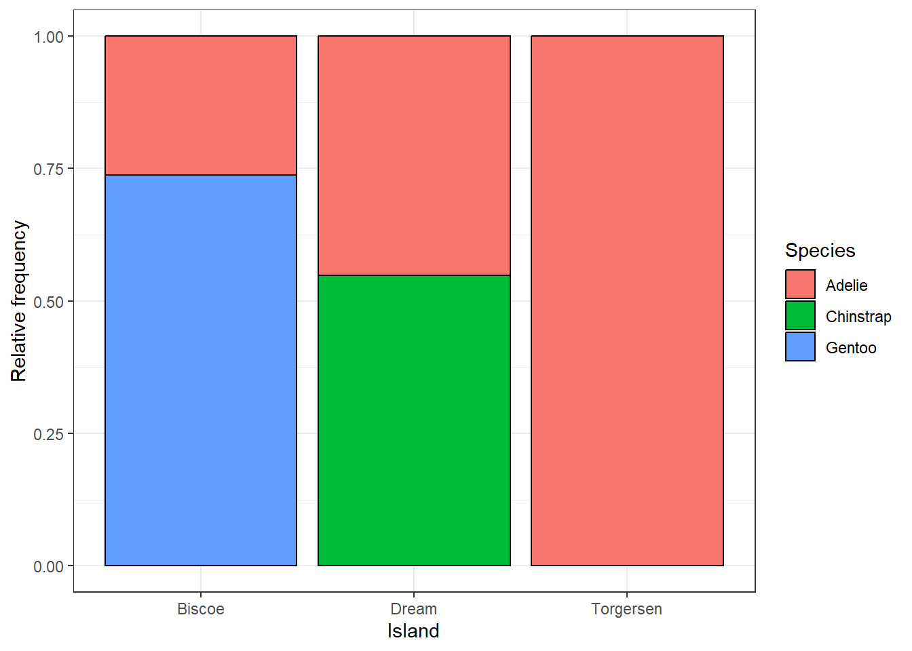
3.5 Saving your plots
Once you are satisfied with your plot, it is a good idea to save it as an image. The best way to save a plot from ggplot() is to use the ggsave() function. You have to specify the name of your file. Good practice is to save all plots to a dedicated folder, for example plots. By default, the last plot displayed in the viewer pane will be saved, and the dimensions will be the same as the current extent of the viewer pane. It is not the best idea to rely on this because the size of the plot will change every time you change the extent of your viewer pane. Therefore, it is a good practice to set the size of your figure using the width and height arguments. Sometimes it requires a bit of experimentation, but since you figure out the optimal settings, you can redraw the plot as many times as you want and always save it with the same dimensions.
ggsave('plots/island_relative_frequency.png', width = 6, height = 4)By default, this function saves the last plot you draw in the Plots pane. Another option to save a specific plot is to save the plot in an object and then save this object within ggsave().
plot1 <- ggplot(penguins, aes(x = island, fill = species)) +
geom_bar(colour = 'black', position = 'fill') +
labs(x = 'Island', y = 'Relative frequency', fill = 'Species') +
theme_bw()
ggsave('plots/island_relative_frequency.png', plot1, width = 6, height = 4) 3.6 Exercises
Use the dataset
Axmanova-Forest-understory-diversity-analyses.xslxfrom the folderforest_understoryand visualise the relationship between species richness of forest herb layer and the tree canopy cover. Is the relationship the same in different forest types?Use the same data and draw a boxplot showing the differences in forest herb layer species richness in different forest types. Which forest type appears to be the most species-rich? * Would there be another way to visualise the relationship between the herb-layer species richness and forest type? Explore the ggplot extensions gallery and find a different plot type that might be useful here.
Load data of squirrel observations from the Central Park Squirrel Census using this line:
read_csv('https://raw.githubusercontent.com/rfordatascience/tidytuesday/main/data/2023/2023-05-23/squirrel_data.csv')Squirrels of which colour were the most common? Draw a barplot to visualise the differences. * Try to find a way to colour the bars with colours resembling the squirrel colours.Load the Pokemon dataset using this line:
read_csv('https://raw.githubusercontent.com/rfordatascience/tidytuesday/main/data/2025/2025-04-01/pokemon_df.csv'). Visualise the distribution of Pokémon weights. * Try to use at least two differentgeomfunctions.* How would you transform the variable before an analysis? Find a way to visualise the distribution on a transformed scale using a
ggplotfunction.What is the relationship between the attack and special attack power of water-type Pokémons?
Which Pokémon type has the highest attack power? Visualise the relationship.
Explore the relationship between the Pokémon attack and defense power. Distinguish different Pokémon types. * When using different colors for many categories, the plot gets quite messy, try to come up with a solution to distinguish the Pokémon types more clearly in the plot.
Modify axis labels, legend, colours, etc. of all plots you created so far, so that you like their appearance and save them to the folder
plots.
3.7 Further reading
ggplot2 vignette: https://ggplot2.tidyverse.org
R 4 Data Science: https://r4ds.hadley.nz/data-visualize.html
Cheatsheet: https://rstudio.github.io/cheatsheets/html/data-visualization.html
ggplot2: Elegant Graphics for Data Analysis (3e): https://ggplot2-book.org
R Graphics Cookbook: https://r-graphics.org
ggplot Extensions: https://exts.ggplot2.tidyverse.org